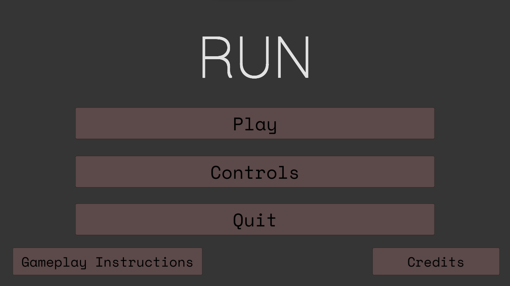
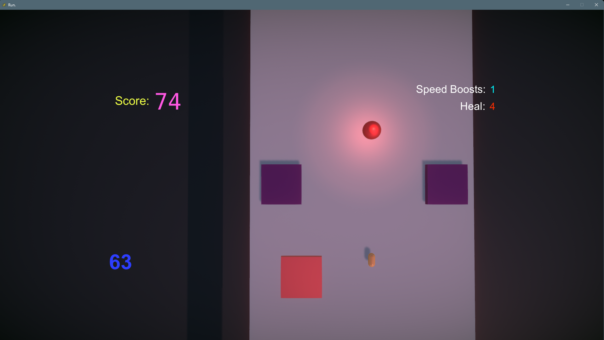
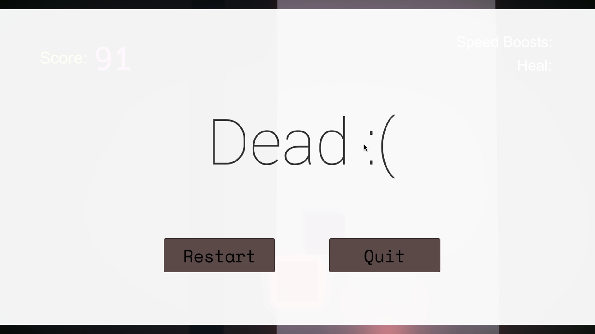
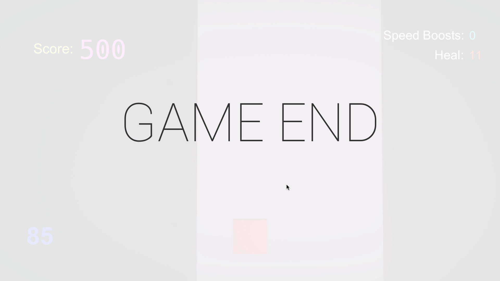
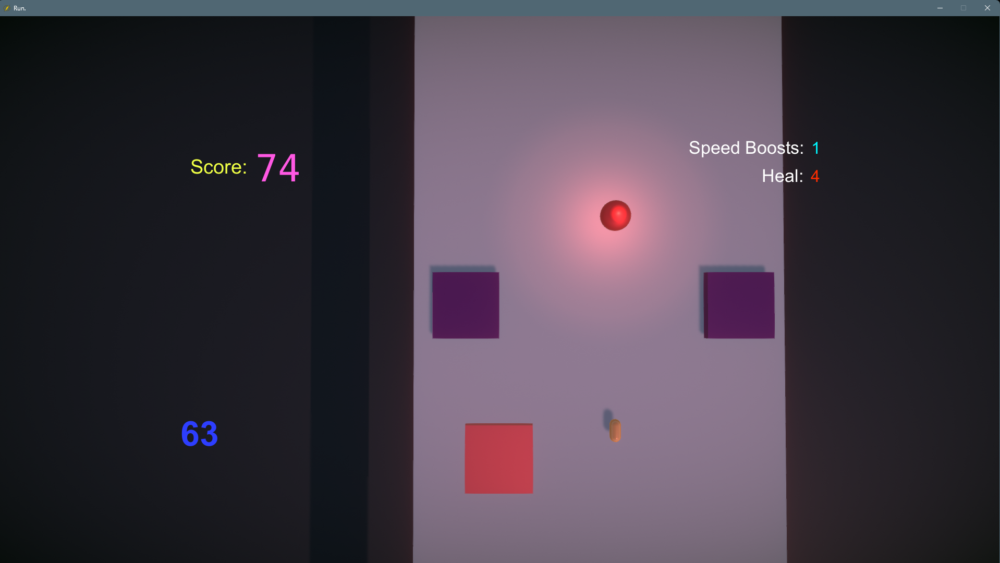
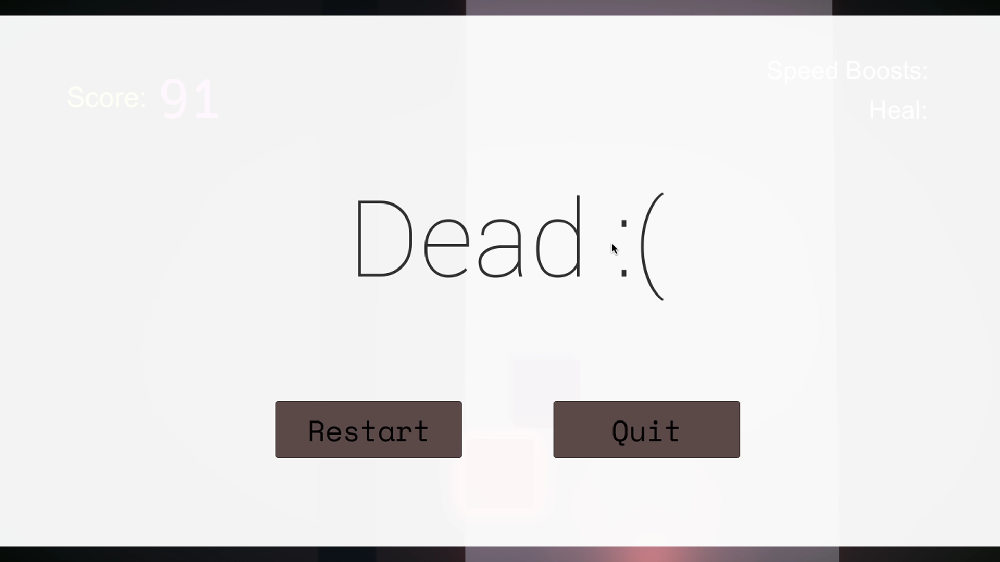
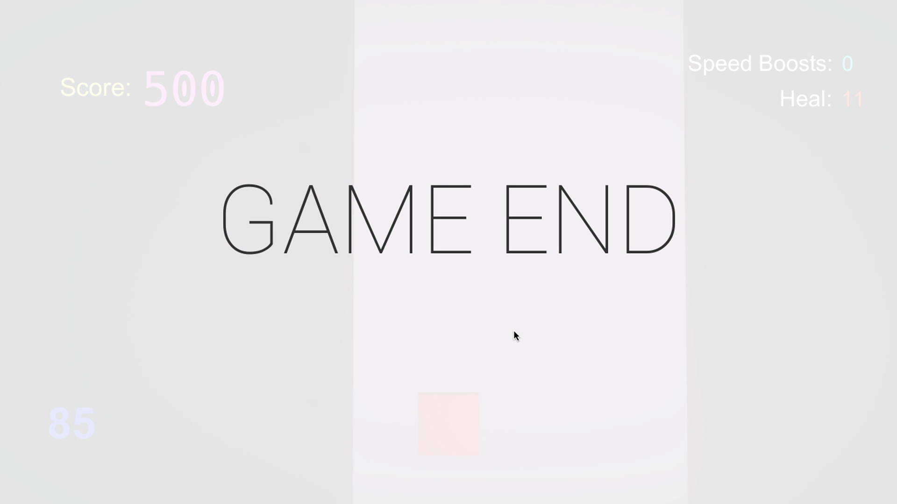

What is it?
• It is a runner game and the my first ever project in Unity.
• The player has the goal to reach 500 points, after which the game ends. The score points increase based on the distance and the speed of the player's cube.
• The player will face enemy cubes in his path, the enemies will also shoot at the player. An enemy bullet does 2HP of damage, while colliding with the enemy decreases 15HP from the total of 100 Player HP.
• There are also abilities such as Speed and Heal. Heal ability heals up the player to full 100HP while speed boosts the movement speed of the player for a limited time.
Motivation
• The main motivation behind this project is learning. I wanted to learn how to create a game in the Unity engine using C#.
Work Done
• Implemented the gameplay and input system.
• Designed the main level with all of the enemies and abilities.
• Programmed the abilities and main game loop.
• Built the UI/UX using Unity UI widgets.
Code Example
The following snipped is responsible the movement of the player cube.
void Update()
{
horizontal = Input.GetAxis("Horizontal");
if(playerScript.speedBoosts != 0)
{
if (Input.GetKeyDown(KeyCode.LeftShift) && !playerScript.shot)
{
multiplier = 8f;
Glow.SetActive(true);
Invoke("DisableBoost", boostTime);
playerScript.speedBoosts--;
}
}
if(Input.GetAxis("Jump") > 0f)
{
slowed = true;
slowedText.SetActive(true);
}
else
slowed = false;
}
private void FixedUpdate()
{
movement = new Vector2(horizontal, 0);
Move(speed, horSpeed);
}
private void DisableBoost()
{
multiplier = 1f;
Glow.SetActive(false);
}
private void Move(float sp, float hrsp)
{
if (slowed == true)
{
sp = sp / 2;
hrsp /= 2;
transform.position += transform.forward * sp * multiplier * Time.deltaTime;
sp = sp * 2;
hrsp *= 2;
rb.AddForce(movement * hrsp);
}
else
{
transform.position += transform.forward * sp * multiplier * Time.deltaTime;
rb.AddForce(movement * hrsp);
slowedText.SetActive(false);
}
}
Full Script (GitHub)
This code can be improved by replacing transform.position and rb.AddForce with rb.MovePosition, this will ensure that the GameObject follows physics and register collisions properly. Replacing Invoke() with Coroutines, using new input system, and implementing player states (Slowed, SpeedBoost etc) are more things that will help with clarity, scalability, and maintenance.
Photos
Main Menu:  Instructions Screen: Controls Screen:
Controls Screen:
 Main Level:

Death Screen:

Win Screen:

Main Level:

Death Screen:

Win Screen:
